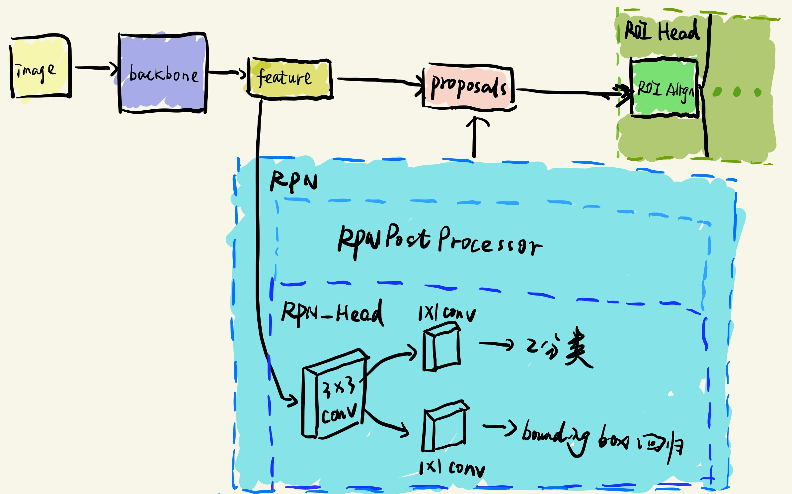
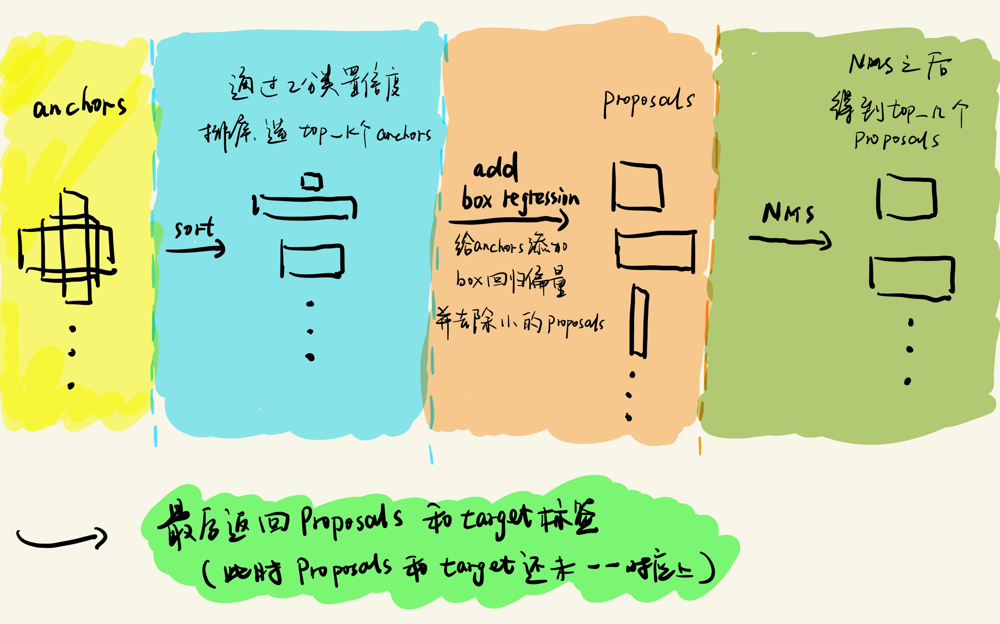

前言
上次我们介绍到了RPN网络的目的是获取Proposals，但是仅仅通过RPN_Head部分得到只是anchors的二分类结果和anchors的box回归结果，想要得到真正的Proposals，我们还需要通过make_rpn_postprocessor（）函数来对RPN_Head的输出作进一步的操作，而这个进一步操作都是通过your_project/maskrcnn_benchmark/modeling/rpn/inference.py中的RPNPostProcessor类来完成的（make_rpn_postprocessor（）函数也在该文件中。），简单的示意图，如下所示：

一、RPNPOSTProcess类
首先介绍一下RPNPostProcessor这个类到底做了些什么工作：
- 在所有anchors中筛选出top_k个anchors，top_k由参数pre_nms_top_n决定。
- 将筛选之后得到的anchors和它对应的box回归值进行结合，得到对应的Proposals。(box回归值就是RPN预测的anchors的偏移量)
- 将面积小于min_size的Proposals去除掉，min_size由参数min_size决定。
- 通过NMS操作，对Proposals进行筛选，得到top_n个Proposals，top_n由参数post_nms_top_n决定
- 最后将top_n个Proposals和target标签一并作为结果返回（此时标签和Proposals的还未一一对应上）
流程图如下所示：

1、init()函数
了解了相关流程之后，我们来看看相关的代码，首先看到__init__()函数：
# RPN后续处理类
class RPNPostProcessor(torch.nn.Module):
"""
Performs post-processing on the outputs of the RPN boxes, before feeding the
proposals to the heads
"""
# 初始化函数中主要是定义类变量，下面对几个类变量的意义做一定解释
def __init__(
self,
pre_nms_top_n,
post_nms_top_n,
nms_thresh,
min_size,
box_coder=None,
fpn_post_nms_top_n=None,
fpn_post_nms_per_batch=True,
):
"""
Arguments:
pre_nms_top_n (int)
post_nms_top_n (int)
nms_thresh (float)
min_size (int)
box_coder (BoxCoder)
fpn_post_nms_top_n (int)
"""
super(RPNPostProcessor, self).__init__()
# 通过二分类置信度挑选的top_k个 anchors数目
self.pre_nms_top_n = pre_nms_top_n
# 通过NMS挑选top_n个Proposals的数目
self.post_nms_top_n = post_nms_top_n
# NMS方法的阈值
self.nms_thresh = nms_thresh
# 去除Proposals面积小于min_size的proposals
self.min_size = min_size
# box_coder可以将RPN得到的regression偏移量添加到anchors上去
if box_coder is None:
box_coder = BoxCoder(weights=(1.0, 1.0, 1.0, 1.0))
self.box_coder = box_coder
if fpn_post_nms_top_n is None:
fpn_post_nms_top_n = post_nms_top_n
self.fpn_post_nms_top_n = fpn_post_nms_top_n
self.fpn_post_nms_per_batch = fpn_post_nms_per_batch2、forward()函数
接着我们看forward()函数，了解该类的操作流程：
def forward(self, anchors, objectness, box_regression, targets=None):
"""
Arguments:
anchors: list[list[BoxList]]
objectness: list[tensor]
box_regression: list[tensor]
Returns:
boxlists (list[BoxList]): the post-processed anchors, after
applying box decoding and NMS
"""
sampled_boxes = []
num_levels = len(objectness)
anchors = list(zip(*anchors))
# 对anchors进行采样 得到Proposals（包含有前面1、2、3、4 四个操作）
for a, o, b in zip(anchors, objectness, box_regression):
sampled_boxes.append(self.forward_for_single_feature_map(a, o, b))
boxlists = list(zip(*sampled_boxes))
boxlists = [cat_boxlist(boxlist) for boxlist in boxlists]
# 应该是将FPN每一层的Proposals都添加在一起（具体还没弄明白）
if num_levels > 1:
boxlists = self.select_over_all_levels(boxlists)
# append ground-truth bboxes to proposals
# 将得到的Proposals和真实的标签放到一起保存
if self.training and targets is not None:
boxlists = self.add_gt_proposals(boxlists, targets)
# 返回Proposals
return boxlists从forward（）函数中，我们可以了解到，它主要执行的就是我上面提到的5个操作，需要重点关注的就是forward_for_single_feature_map()函数和add_gt_proposals（）函数。
3、forward_for_single_feature_map()函数
下面首先介绍forward_for_single_feature_map()函数:
def forward_for_single_feature_map(self, anchors, objectness, box_regression):
"""
Arguments:
anchors: list[BoxList]
N: batch size
A: num of anchor
H: height of image
W: width of image
关于RPN得到的anchors数目，我还是简单的讲一下，
RPN是流程一般是给每一个像素点都生成9个anchors（num of anchor），
因此每一张图片中，总的anchors数目为:A * H * W
objectness: tensor of size N, A, H, W
box_regression: tensor of size N, A * 4, H, W
"""
device = objectness.device
N, A, H, W = objectness.shape
# put in the same format as anchors
# objectness的维度为 (N, A*H*W)
objectness = permute_and_flatten(objectness, N, A, 1, H, W).view(N, -1)
objectness = objectness.sigmoid()
box_regression = permute_and_flatten(box_regression, N, A, 4, H, W)
num_anchors = A * H * W
# 通过对objectness置信度排序，挑选出top_n个anchors（objectness 和 box_regression）
pre_nms_top_n = min(self.pre_nms_top_n, num_anchors)
objectness, topk_idx = objectness.topk(pre_nms_top_n, dim=1, sorted=True)
batch_idx = torch.arange(N, device=device)[:, None]
box_regression = box_regression[batch_idx, topk_idx]
image_shapes = [box.size for box in anchors]
concat_anchors = torch.cat([a.bbox for a in anchors], dim=0)
concat_anchors = concat_anchors.reshape(N, -1, 4)[batch_idx, topk_idx]
# 给筛选之后得到的anchors添加regression偏移量 得到Proposals
proposals = self.box_coder.decode(
box_regression.view(-1, 4), concat_anchors.view(-1, 4)
)
proposals = proposals.view(N, -1, 4)
result = []
for proposal, score, im_shape in zip(proposals, objectness, image_shapes):
boxlist = BoxList(proposal, im_shape, mode="xyxy")
boxlist.add_field("objectness", score)
boxlist = boxlist.clip_to_image(remove_empty=False)
# 去除面积小于min_size的Proposals
boxlist = remove_small_boxes(boxlist, self.min_size)
# 对Proposals进行NMS操作得到最后的Proposals
boxlist = boxlist_nms(
boxlist,
self.nms_thresh,
max_proposals=self.post_nms_top_n,
score_field="objectness",
)
result.append(boxlist)
return result4、add_gt_proposals()函数
接着要介绍的就是给筛选之后得到的Proposals和真实标签合并放到一起保存的add_gt_proposals（）函数:注：这个函数返回结果并没有将Proposals和target标签一一对应上，即并不知道哪个Proposal对应哪个target标签，只是把它们放在一起保存而已。
def add_gt_proposals(self, proposals, targets):
"""
Arguments:
proposals: list[BoxList]
targets: list[BoxList]
"""
# Get the device we're operating on
device = proposals[0].bbox.device
# 拷贝一个dataset中获得的boxlist对象（dataset中的target）（fields不进行拷贝）
gt_boxes = [target.copy_with_fields([]) for target in targets]
# later cat of bbox requires all fields to be present for all bbox
# so we need to add a dummy for objectness that's missing
# gt_boxes中没有任何的field
# 添加一个objectness的fields
# BoxList是项目内设的一个类，add_field（）方法就是添加字典数据的过程
# 下面这个就是在gt_box中内置字典中，添加一个key为objectness，value为[1...1]的数据
for gt_box in gt_boxes:
gt_box.add_field("objectness", torch.ones(len(gt_box), device=device))
proposals = [
cat_boxlist((proposal, gt_box))
for proposal, gt_box in zip(proposals, gt_boxes)
]
return proposals5、make_rpn_postprocessor()函数
最后我们看到make_rpn_postprocessor()函数，看名字我们就知道这个函数就是用来获取 RPNPostProcessor类对象的：
def make_rpn_postprocessor(config, rpn_box_coder, is_train):
# 设置nms之后保留的Proposals数目（有FPN的情况）
fpn_post_nms_top_n = config.MODEL.RPN.FPN_POST_NMS_TOP_N_TRAIN
if not is_train:
fpn_post_nms_top_n = config.MODEL.RPN.FPN_POST_NMS_TOP_N_TEST
# 设置 通过RPN输出anchor的二分类置信度进行筛选 最后保留的anchor数目（有点拗口~）
pre_nms_top_n = config.MODEL.RPN.PRE_NMS_TOP_N_TRAIN
# 设置nms之后保留的Proposals数目
post_nms_top_n = config.MODEL.RPN.POST_NMS_TOP_N_TRAIN
if not is_train:
pre_nms_top_n = config.MODEL.RPN.PRE_NMS_TOP_N_TEST
post_nms_top_n = config.MODEL.RPN.POST_NMS_TOP_N_TEST
fpn_post_nms_per_batch = config.MODEL.RPN.FPN_POST_NMS_PER_BATCH
# 设置NMS阈值
nms_thresh = config.MODEL.RPN.NMS_THRESH
# 设置最小的Proposals面积大小
min_size = config.MODEL.RPN.MIN_SIZE
# 创建RPNPostProcessor对象
box_selector = RPNPostProcessor(
pre_nms_top_n=pre_nms_top_n,
post_nms_top_n=post_nms_top_n,
nms_thresh=nms_thresh,
min_size=min_size,
box_coder=rpn_box_coder,
fpn_post_nms_top_n=fpn_post_nms_top_n,
fpn_post_nms_per_batch=fpn_post_nms_per_batch,
)
# 返回RPNPostProcessor类对象
return box_selector二、BoxList
这个类本身是不在inference.py这个文件中的，但是这个类又在inference.py中反复出现，并且贯穿了整个数据流过程，因此还是决定放在这里介绍一下。
BoxList定义在your_project/maskrcnn_benchmark/structures/bounding_box.py文件中，并且在your_project/ABSTRACTIONS.md中有简单的注释介绍，在此我就将其英文的注释介绍翻译 翻译
以下是英文部分：
### BoxList
The `BoxList` class holds a set of bounding boxes (represented as a `Nx4` tensor) for
a specific image, as well as the size of the image as a `(width, height)` tuple.
It also contains a set of methods that allow to perform geometric
transformations to the bounding boxes (such as cropping, scaling and flipping).
The class accepts bounding boxes from two different input formats:
- `xyxy`, where each box is encoded as a `x1`, `y1`, `x2` and `y2` coordinates, and
- `xywh`, where each box is encoded as `x1`, `y1`, `w` and `h`.
Additionally, each `BoxList` instance can also hold arbitrary additional information
for each bounding box, such as labels, visibility, probability scores etc.
Here is an example on how to create a `BoxList` from a list of coordinates:
```python
from maskrcnn_benchmark.structures.bounding_box import BoxList, FLIP_LEFT_RIGHT
import torch
width = 100
height = 200
boxes = [
[0, 10, 50, 50],
[50, 20, 90, 60],
[10, 10, 50, 50]
]
# create a BoxList with 3 boxes
bbox = BoxList(boxes, image_size=(width, height), mode='xyxy')
# perform some box transformations, has similar API as PIL.Image
bbox_scaled = bbox.resize((width * 2, height * 3))
bbox_flipped = bbox.transpose(FLIP_LEFT_RIGHT)
# add labels for each bbox
labels = torch.tensor([0, 10, 1])
bbox.add_field('labels', labels)
# bbox also support a few operations, like indexing
# here, selects boxes 0 and 2
bbox_subset = bbox[[0, 2]]
```至此，关于RPN module获取Proposals的过程已经介绍完了，至于如何将相应的anchors和Target标签一一对应计算相应的loss？
将放在下一篇介绍：maskrcnn-benchmark-master（六）：RPN的loss文件
码字不易 未经许可 请勿随意转载！